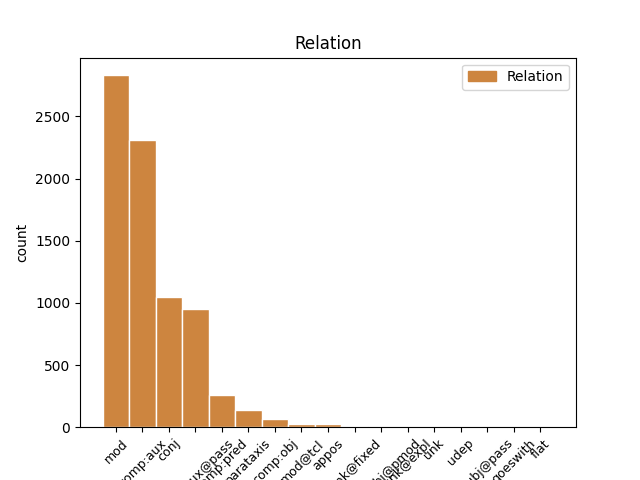
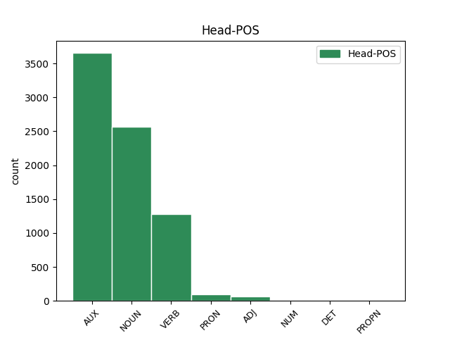
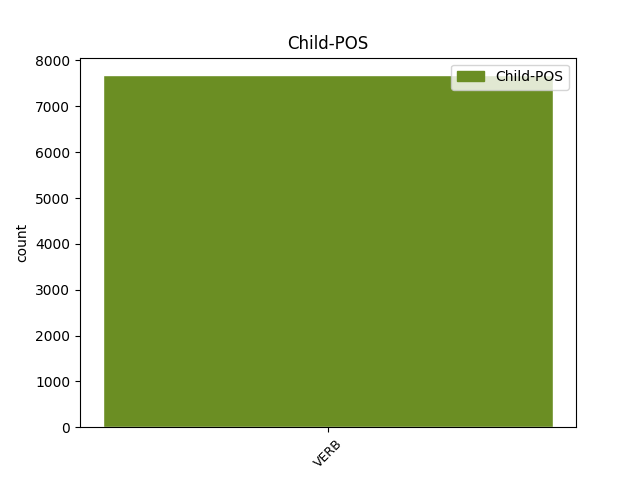

Distribution of features within this leaf



Agreement Rules sorted by frequency.
- When the dependent token is the modifer(mod) of the head token, and the dependent token is VERB.
1 Mediana _ _ _ _ 0 _ _ _
2 me _ _ _ _ 0 _ _ _
3 a _ _ _ _ 0 _ _ _
4 unui _ _ _ _ 0 _ _ _
5 set _ _ _ _ 0 _ _ _
6 de _ _ _ _ 0 _ _ _
7 date _ _ _ _ 0 _ _ _
8 statistice _ _ _ _ 0 _ _ _
9 distincte _ _ _ _ 0 _ _ _
10 ordonate _ _ _ _ 0 _ _ _
11 după _ _ _ _ 0 _ _ _
12 mărime _ _ _ _ 0 _ _ _
13 x1 _ _ _ _ 0 _ _ _
14 < _ _ _ _ 0 _ _ _
15 x2 _ _ _ _ 0 _ _ _
16 < _ _ _ _ 0 _ _ _
17 ... _ _ _ _ 0 _ _ _
18 < _ _ _ _ 0 _ _ _
19 xn _ _ _ _ 0 _ _ _
20 este _ _ _ _ 0 _ _ _
21 numărul număr NOUN Ncmsry Case=Acc,Nom|Definite=Def|Gender=Masc|Number=Sing 0 _ _ _
22 care _ _ _ _ 0 _ _ _
23 împarte împărți VERB Vmip3s Mood=Ind|Number=Sing|Person=3|Tense=Pres|VerbForm=Fin 21 mod _ _
24 setul _ _ _ _ 0 _ _ _
25 de _ _ _ _ 0 _ _ _
26 date _ _ _ _ 0 _ _ _
27 în _ _ _ _ 0 _ _ _
28 două _ _ _ _ 0 _ _ _
29 grupe _ _ _ _ 0 _ _ _
30 egale _ _ _ _ 0 _ _ _
31 ca _ _ _ _ 0 _ _ _
32 număr _ _ _ _ 0 _ _ _
33 . _ _ _ _ 0 _ _ _
1 Prin _ _ _ _ 0 _ _ _
2 spațiu _ _ _ _ 0 _ _ _
3 metric _ _ _ _ 0 _ _ _
4 se _ _ _ _ 0 _ _ _
5 înțelege _ _ _ _ 0 _ _ _
6 orice _ _ _ _ 0 _ _ _
7 mulțime _ _ _ _ 0 _ _ _
8 nevidă _ _ _ _ 0 _ _ _
9 pe _ _ _ _ 0 _ _ _
10 care _ _ _ _ 0 _ _ _
11 s- _ _ _ _ 0 _ _ _
12 a _ _ _ _ 0 _ _ _
13 definit _ _ _ _ 0 _ _ _
14 o _ _ _ _ 0 _ _ _
15 distanță _ _ _ _ 0 _ _ _
16 , _ _ _ _ 0 _ _ _
17 iar _ _ _ _ 0 _ _ _
18 prin _ _ _ _ 0 _ _ _
19 spațiu _ _ _ _ 0 _ _ _
20 normat _ _ _ _ 0 _ _ _
21 orice _ _ _ _ 0 _ _ _
22 spațiu _ _ _ _ 0 _ _ _
23 vectorial _ _ _ _ 0 _ _ _
24 pe _ _ _ _ 0 _ _ _
25 care _ _ _ _ 0 _ _ _
26 s- _ _ _ _ 0 _ _ _
27 a avea AUX Va--3s Number=Sing|Person=3 0 _ _ _
28 definit defini VERB Vmp--sm Gender=Masc|Number=Sing|VerbForm=Part 27 comp:aux _ _
29 o _ _ _ _ 0 _ _ _
30 normă _ _ _ _ 0 _ _ _
31 . _ _ _ _ 0 _ _ _
1 Coeficientul _ _ _ _ 0 _ _ _
2 de _ _ _ _ 0 _ _ _
3 variație _ _ _ _ 0 _ _ _
4 este fi AUX Vmip3s Mood=Ind|Number=Sing|Person=3|Tense=Pres|VerbForm=Fin 0 _ _ _
5 o _ _ _ _ 0 _ _ _
6 statistică _ _ _ _ 0 _ _ _
7 relativă _ _ _ _ 0 _ _ _
8 a _ _ _ _ 0 _ _ _
9 dispersiei _ _ _ _ 0 _ _ _
10 și _ _ _ _ 0 _ _ _
11 se _ _ _ _ 0 _ _ _
12 folosește folosi VERB Vmip3s Mood=Ind|Number=Sing|Person=3|Tense=Pres|VerbForm=Fin 4 conj _ _
13 la _ _ _ _ 0 _ _ _
14 compararea _ _ _ _ 0 _ _ _
15 dispersiei _ _ _ _ 0 _ _ _
16 diferitelor _ _ _ _ 0 _ _ _
17 variabile _ _ _ _ 0 _ _ _
18 ( _ _ _ _ 0 _ _ _
19 caracteristici _ _ _ _ 0 _ _ _
20 ) _ _ _ _ 0 _ _ _
21 . _ _ _ _ 0 _ _ _
1 Deviația _ _ _ _ 0 _ _ _
2 standard _ _ _ _ 0 _ _ _
3 a _ _ _ _ 0 _ _ _
4 fost fi AUX Vap--sm Gender=Masc|Number=Sing|VerbForm=Part 0 _ _ _
5 definită defini VERB Vmp--sf Gender=Fem|Number=Sing|VerbForm=Part 4 comp:aux@pass _ _
6 cu _ _ _ _ 0 _ _ _
7 o _ _ _ _ 0 _ _ _
8 formulă _ _ _ _ 0 _ _ _
9 . _ _ _ _ 0 _ _ _
1 În _ _ _ _ 0 _ _ _
2 anumite _ _ _ _ 0 _ _ _
3 aplicații _ _ _ _ 0 _ _ _
4 este _ _ _ _ 0 _ _ _
5 utilă _ _ _ _ 0 _ _ _
6 cunoașterea _ _ _ _ 0 _ _ _
7 comportării _ _ _ _ 0 _ _ _
8 unei _ _ _ _ 0 _ _ _
9 funcții _ _ _ _ 0 _ _ _
10 f _ _ _ _ 0 _ _ _
11 în _ _ _ _ 0 _ _ _
12 vecinătatea _ _ _ _ 0 _ _ _
13 unui _ _ _ _ 0 _ _ _
14 punct _ _ _ _ 0 _ _ _
15 a _ _ _ _ 0 _ _ _
16 fără _ _ _ _ 0 _ _ _
17 a _ _ _ _ 0 _ _ _
18 lua _ _ _ _ 0 _ _ _
19 în _ _ _ _ 0 _ _ _
20 considerare _ _ _ _ 0 _ _ _
21 valoarea _ _ _ _ 0 _ _ _
22 pe _ _ _ _ 0 _ _ _
23 care _ _ _ _ 0 _ _ _
24 o _ _ _ _ 0 _ _ _
25 ia _ _ _ _ 0 _ _ _
26 funcția _ _ _ _ 0 _ _ _
27 în _ _ _ _ 0 _ _ _
28 punctul _ _ _ _ 0 _ _ _
29 a _ _ _ _ 0 _ _ _
30 ( _ _ _ _ 0 _ _ _
31 în _ _ _ _ 0 _ _ _
32 cazul _ _ _ _ 0 _ _ _
33 în _ _ _ _ 0 _ _ _
34 care _ _ _ _ 0 _ _ _
35 ea _ _ _ _ 0 _ _ _
36 este fi AUX Vaip3s Mood=Ind|Number=Sing|Person=3|Tense=Pres|VerbForm=Fin 0 _ _ _
37 definită defini VERB Vmp--sf Gender=Fem|Number=Sing|VerbForm=Part 36 comp:pred _ _
38 în _ _ _ _ 0 _ _ _
39 a _ _ _ _ 0 _ _ _
40 ) _ _ _ _ 0 _ _ _
41 . _ _ _ _ 0 _ _ _
1 Citește citi VERB Vmip3s Mood=Ind|Number=Sing|Person=3|Tense=Pres|VerbForm=Fin 0 _ _ _
2 instrucțiunea _ _ _ _ 0 _ _ _
3 - _ _ _ _ 0 _ _ _
4 pe _ _ _ _ 0 _ _ _
5 durata _ _ _ _ 0 _ _ _
6 acestui _ _ _ _ 0 _ _ _
7 ciclu _ _ _ _ 0 _ _ _
8 se _ _ _ _ 0 _ _ _
9 transmite transmite VERB Vmip3s Mood=Ind|Number=Sing|Person=3|Tense=Pres|VerbForm=Fin 1 parataxis _ _
10 adresa _ _ _ _ 0 _ _ _
11 instrucțiunii _ _ _ _ 0 _ _ _
12 de _ _ _ _ 0 _ _ _
13 executat _ _ _ _ 0 _ _ _
14 și _ _ _ _ 0 _ _ _
15 se _ _ _ _ 0 _ _ _
16 aduce _ _ _ _ 0 _ _ _
17 , _ _ _ _ 0 _ _ _
18 din _ _ _ _ 0 _ _ _
19 memorie _ _ _ _ 0 _ _ _
20 , _ _ _ _ 0 _ _ _
21 instrucțiunea _ _ _ _ 0 _ _ _
22 în _ _ _ _ 0 _ _ _
23 CPU _ _ _ _ 0 _ _ _
24 ( _ _ _ _ 0 _ _ _
25 ciclul _ _ _ _ 0 _ _ _
26 Fetch _ _ _ _ 0 _ _ _
27 ) _ _ _ _ 0 _ _ _
28 . _ _ _ _ 0 _ _ _
1 Extragem _ _ _ _ 0 _ _ _
2 un _ _ _ _ 0 _ _ _
3 eșantion _ _ _ _ 0 _ _ _
4 și _ _ _ _ 0 _ _ _
5 din _ _ _ _ 0 _ _ _
6 acest _ _ _ _ 0 _ _ _
7 eșantion _ _ _ _ 0 _ _ _
8 conjecturăm conjectura VERB Vmip1p Mood=Ind|Number=Plur|Person=1|Tense=Pres|VerbForm=Fin 0 _ _ _
9 ce _ _ _ _ 0 _ _ _
10 credem crede VERB Vmip1p Mood=Ind|Number=Plur|Person=1|Tense=Pres|VerbForm=Fin 8 comp:obj _ _
11 că _ _ _ _ 0 _ _ _
12 se _ _ _ _ 0 _ _ _
13 găsește _ _ _ _ 0 _ _ _
14 în _ _ _ _ 0 _ _ _
15 urnă _ _ _ _ 0 _ _ _
16 . _ _ _ _ 0 _ _ _
1 În _ _ _ _ 0 _ _ _
2 cazul _ _ _ _ 0 _ _ _
3 rotațiilor _ _ _ _ 0 _ _ _
4 , _ _ _ _ 0 _ _ _
5 biții _ _ _ _ 0 _ _ _
6 deplasați _ _ _ _ 0 _ _ _
7 în _ _ _ _ 0 _ _ _
8 afara _ _ _ _ 0 _ _ _
9 operandului _ _ _ _ 0 _ _ _
10 nu _ _ _ _ 0 _ _ _
11 sunt _ _ _ _ 0 _ _ _
12 pierduți _ _ _ _ 0 _ _ _
13 , _ _ _ _ 0 _ _ _
14 ca _ _ _ _ 0 _ _ _
15 în _ _ _ _ 0 _ _ _
16 cazul _ _ _ _ 0 _ _ _
17 deplasărilor _ _ _ _ 0 _ _ _
18 , _ _ _ _ 0 _ _ _
19 ci _ _ _ _ 0 _ _ _
20 sunt _ _ _ _ 0 _ _ _
21 rotiți roti VERB Vmp--pm Gender=Masc|Number=Plur|VerbForm=Part 0 _ _ _
22 ( _ _ _ _ 0 _ _ _
23 circulați circula VERB Vmp--pm Gender=Masc|Number=Plur|VerbForm=Part 21 appos _ SpaceAfter=No
24 ) _ _ _ _ 0 _ _ _
25 înapoi _ _ _ _ 0 _ _ _
26 către _ _ _ _ 0 _ _ _
27 celălalt _ _ _ _ 0 _ _ _
28 capăt _ _ _ _ 0 _ _ _
29 al _ _ _ _ 0 _ _ _
30 operandului _ _ _ _ 0 _ _ _
31 . _ _ _ _ 0 _ _ _
1 Am _ _ _ _ 0 _ _ _
2 neglijat _ _ _ _ 0 _ _ _
3 energia _ _ _ _ 0 _ _ _
4 cinetică _ _ _ _ 0 _ _ _
5 a _ _ _ _ 0 _ _ _
6 electronilor _ _ _ _ 0 _ _ _
7 la _ _ _ _ 0 _ _ _
8 catod _ _ _ _ 0 _ _ _
9 , _ _ _ _ 0 _ _ _
10 astfel _ _ _ _ 0 _ _ _
11 că _ _ _ _ 0 _ _ _
12 atunci _ _ _ _ 0 _ _ _
13 când _ _ _ _ 0 _ _ _
14 electronii _ _ _ _ 0 _ _ _
15 lovesc lovi VERB Vmip3p Mood=Ind|Number=Plur|Person=3|Tense=Pres|VerbForm=Fin 17 mod@tcl _ _
16 ținta _ _ _ _ 0 _ _ _
17 au avea VERB Vmip3p Mood=Ind|Number=Plur|Person=3|Tense=Pres|VerbForm=Fin 0 _ _ _
18 o _ _ _ _ 0 _ _ _
19 energie _ _ _ _ 0 _ _ _
20 cinetică _ _ _ _ 0 _ _ _
21 eU _ _ _ _ 0 _ _ _
22 , _ _ _ _ 0 _ _ _
23 U _ _ _ _ 0 _ _ _
24 fiind _ _ _ _ 0 _ _ _
25 diferența _ _ _ _ 0 _ _ _
26 de _ _ _ _ 0 _ _ _
27 potențial _ _ _ _ 0 _ _ _
28 aplicată _ _ _ _ 0 _ _ _
29 electrozilor _ _ _ _ 0 _ _ _
30 , _ _ _ _ 0 _ _ _
31 iar _ _ _ _ 0 _ _ _
32 e _ _ _ _ 0 _ _ _
33 sarcina _ _ _ _ 0 _ _ _
34 electronului _ _ _ _ 0 _ _ _
35 . _ _ _ _ 0 _ _ _
1 Adăugă _ _ _ _ 0 _ _ _
2 el _ _ _ _ 0 _ _ _
3 : _ _ _ _ 0 _ _ _
4 Este _ _ _ _ 0 _ _ _
5 foarte _ _ _ _ 0 _ _ _
6 important _ _ _ _ 0 _ _ _
7 ca _ _ _ _ 0 _ _ _
8 la _ _ _ _ 0 _ _ _
9 oricare _ _ _ _ 0 _ _ _
10 moment _ _ _ _ 0 _ _ _
11 al _ _ _ _ 0 _ _ _
12 sezonului _ _ _ _ 0 _ _ _
13 să _ _ _ _ 0 _ _ _
14 nu _ _ _ _ 0 _ _ _
15 te _ _ _ _ 0 _ _ _
16 lași lăsa VERB Vmip2s Mood=Ind|Number=Sing|Person=2|Tense=Pres|VerbForm=Fin 0 _ _ _
17 dus duce VERB Vmp--sm Gender=Masc|Number=Sing|VerbForm=Part 16 unk@fixed _ _
18 de _ _ _ _ 0 _ _ _
19 val _ _ _ _ 0 _ _ _
20 prea _ _ _ _ 0 _ _ _
21 la _ _ _ _ 0 _ _ _
22 vârf _ _ _ _ 0 _ _ _
23 . _ _ _ _ 0 _ _ _
1 Cerea cere VERB Vmii3s Mood=Ind|Number=Sing|Person=3|Tense=Imp|VerbForm=Fin 0 _ _ _
2 bani _ _ _ _ 0 _ _ _
3 de _ _ _ _ 0 _ _ _
4 la _ _ _ _ 0 _ _ _
5 cine _ _ _ _ 0 _ _ _
6 putea putea VERB Vmii3s Mood=Ind|Number=Sing|Person=3|Tense=Imp|VerbForm=Fin 1 comp:obj@pmod _ SpaceAfter=No
7 , _ _ _ _ 0 _ _ _
8 spre _ _ _ _ 0 _ _ _
9 a _ _ _ _ 0 _ _ _
10 trăi _ _ _ _ 0 _ _ _
11 pe _ _ _ _ 0 _ _ _
12 un _ _ _ _ 0 _ _ _
13 picior _ _ _ _ 0 _ _ _
14 mai _ _ _ _ 0 _ _ _
15 convenabil _ _ _ _ 0 _ _ _
16 . _ _ _ _ 0 _ _ _
1 Din _ _ _ _ 0 _ _ _
2 soarele soare NOUN Ncmsry Case=Acc,Nom|Definite=Def|Gender=Masc|Number=Sing 0 _ _ _
3 -apune apune VERB Vmip3s Mood=Ind|Number=Sing|Person=3|Tense=Pres|VerbForm=Fin 2 goeswith _ _
4 blând _ _ _ _ 0 _ _ _
5 raze _ _ _ _ 0 _ _ _
6 se _ _ _ _ 0 _ _ _
7 scurg _ _ _ _ 0 _ _ _
8 Spre _ _ _ _ 0 _ _ _
9 trei _ _ _ _ 0 _ _ _
10 chiparoși _ _ _ _ 0 _ _ _
11 să _ _ _ _ 0 _ _ _
12 se _ _ _ _ 0 _ _ _
13 -nchine _ _ _ _ 0 _ _ _
14 , _ _ _ _ 0 _ _ _
15 Trei _ _ _ _ 0 _ _ _
16 sfeșnice _ _ _ _ 0 _ _ _
17 stinse _ _ _ _ 0 _ _ _
18 , _ _ _ _ 0 _ _ _
19 uitate _ _ _ _ 0 _ _ _
20 -n _ _ _ _ 0 _ _ _
21 amurg _ _ _ _ 0 _ _ _
22 , _ _ _ _ 0 _ _ _
23 Pe _ _ _ _ 0 _ _ _
24 -un _ _ _ _ 0 _ _ _
25 umăr _ _ _ _ 0 _ _ _
26 de _ _ _ _ 0 _ _ _
27 templu _ _ _ _ 0 _ _ _
28 -n _ _ _ _ 0 _ _ _
29 ruine _ _ _ _ 0 _ _ _
30 . _ _ _ _ 0 _ _ _
1 Nu _ _ _ _ 0 _ _ _
2 s- _ _ _ _ 0 _ _ _
3 au avea AUX Va--3p Number=Plur|Person=3 0 _ _ _
4 identificat _ _ _ _ 0 _ _ _
5 in _ _ _ _ 0 _ _ _
6 vivo _ _ _ _ 0 _ _ _
7 conjugați conjuga VERB Vmp--pm Gender=Masc|Number=Plur|VerbForm=Part 3 subj@pass _ _
8 de _ _ _ _ 0 _ _ _
9 faza _ _ _ _ 0 _ _ _
10 2 _ _ _ _ 0 _ _ _
11 ale _ _ _ _ 0 _ _ _
12 nici _ _ _ _ 0 _ _ _
13 unuia _ _ _ _ 0 _ _ _
14 dintre _ _ _ _ 0 _ _ _
15 compuși _ _ _ _ 0 _ _ _
16 . _ _ _ _ 0 _ _ _
1 În _ _ _ _ 0 _ _ _
2 1882 _ _ _ _ 0 _ _ _
3 „ _ _ _ _ 0 _ _ _
4 Cimpoiul _ _ _ _ 0 _ _ _
5 ” _ _ _ _ 0 _ _ _
6 îi _ _ _ _ 0 _ _ _
7 tipărea _ _ _ _ 0 _ _ _
8 traducerea _ _ _ _ 0 _ _ _
9 primelor _ _ _ _ 0 _ _ _
10 trei _ _ _ _ 0 _ _ _
11 cânturi _ _ _ _ 0 _ _ _
12 din _ _ _ _ 0 _ _ _
13 Ierusalimul Ierusalim PROPN Npmsry Case=Acc,Nom|Definite=Def|Gender=Masc|Number=Sing 0 _ _ _
14 eliberat elibera VERB Vmp--sm Gender=Masc|Number=Sing|VerbForm=Part 13 flat _ _
15 de _ _ _ _ 0 _ _ _
16 Torquato _ _ _ _ 0 _ _ _
17 Tasso _ _ _ _ 0 _ _ _
18 . _ _ _ _ 0 _ _ _
1 4 _ _ _ _ 0 _ _ _
2 Testul _ _ _ _ 0 _ _ _
3 ( _ _ _ _ 0 _ _ _
4 ele _ _ _ _ 0 _ _ _
5 ) _ _ _ _ 0 _ _ _
6 efectuat efectua VERB Vmp--sm Gender=Masc|Number=Sing|VerbForm=Part 0 _ _ _
7 ( _ _ _ _ 0 _ _ _
8 e fi VERB Vmip3s Mood=Ind|Number=Sing|Person=3|Tense=Pres|VerbForm=Fin 6 unk _ SpaceAfter=No
9 ) _ _ _ _ 0 _ _ _
10 , _ _ _ _ 0 _ _ _
11 rezultatele _ _ _ _ 0 _ _ _
12 acestora _ _ _ _ 0 _ _ _
13 și _ _ _ _ 0 _ _ _
14 vaccinările _ _ _ _ 0 _ _ _
15 trebuie _ _ _ _ 0 _ _ _
16 înscrise _ _ _ _ 0 _ _ _
17 în _ _ _ _ 0 _ _ _
18 documentul _ _ _ _ 0 _ _ _
19 de _ _ _ _ 0 _ _ _
20 identificare _ _ _ _ 0 _ _ _
21 ( _ _ _ _ 0 _ _ _
22 pașaport _ _ _ _ 0 _ _ _
23 ) _ _ _ _ 0 _ _ _
24 . _ _ _ _ 0 _ _ _
1 Ruth _ _ _ _ 0 _ _ _
2 s- _ _ _ _ 0 _ _ _
3 a _ _ _ _ 0 _ _ _
4 dat _ _ _ _ 0 _ _ _
5 pe _ _ _ _ 0 _ _ _
6 spate _ _ _ _ 0 _ _ _
7 în _ _ _ _ 0 _ _ _
8 scaun _ _ _ _ 0 _ _ _
9 și _ _ _ _ 0 _ _ _
10 și- _ _ _ _ 0 _ _ _
11 a avea AUX Va--3s Number=Sing|Person=3 0 _ _ _
12 încleștat _ _ _ _ 0 _ _ _
13 mâinile _ _ _ _ 0 _ _ _
14 în _ _ _ _ 0 _ _ _
15 poală _ _ _ _ 0 _ _ _
16 , _ _ _ _ 0 _ _ _
17 atât _ _ _ _ 0 _ _ _
18 de _ _ _ _ 0 _ _ _
19 strâns strânge VERB Vmp--sm Gender=Masc|Number=Sing|VerbForm=Part 11 udep _ _
20 încât _ _ _ _ 0 _ _ _
21 se _ _ _ _ 0 _ _ _
22 rănea _ _ _ _ 0 _ _ _
23 . _ _ _ _ 0 _ _ _
Disagree Examples:
1 O _ _ _ _ 0 _ _ _
2 dată _ _ _ _ 0 _ _ _
3 , _ _ _ _ 0 _ _ _
4 când _ _ _ _ 0 _ _ _
5 treceau trece VERB Vmii3p Mood=Ind|Number=Plur|Person=3|Tense=Imp|VerbForm=Fin 15 mod _ _
6 unul _ _ _ _ 0 _ _ _
7 pe _ _ _ _ 0 _ _ _
8 lângă _ _ _ _ 0 _ _ _
9 altul _ _ _ _ 0 _ _ _
10 pe _ _ _ _ 0 _ _ _
11 coridor _ _ _ _ 0 _ _ _
12 , _ _ _ _ 0 _ _ _
13 ea _ _ _ _ 0 _ _ _
14 îi _ _ _ _ 0 _ _ _
15 aruncase arunca VERB Vmil3s Mood=Ind|Number=Sing|Person=3|Tense=Pqp|VerbForm=Fin 0 _ _ _
16 o _ _ _ _ 0 _ _ _
17 privire _ _ _ _ 0 _ _ _
18 piezișă _ _ _ _ 0 _ _ _
19 care _ _ _ _ 0 _ _ _
20 parcă _ _ _ _ 0 _ _ _
21 -l _ _ _ _ 0 _ _ _
22 străpunsese _ _ _ _ 0 _ _ _
23 și _ _ _ _ 0 _ _ _
24 pentru _ _ _ _ 0 _ _ _
25 o _ _ _ _ 0 _ _ _
26 clipă _ _ _ _ 0 _ _ _
27 fusese _ _ _ _ 0 _ _ _
28 cuprins _ _ _ _ 0 _ _ _
29 de _ _ _ _ 0 _ _ _
30 o _ _ _ _ 0 _ _ _
31 groază _ _ _ _ 0 _ _ _
32 oarbă _ _ _ _ 0 _ _ _
33 . _ _ _ _ 0 _ _ _
1 Se _ _ _ _ 0 _ _ _
2 simțea _ _ _ _ 0 _ _ _
3 foarte _ _ _ _ 0 _ _ _
4 tare _ _ _ _ 0 _ _ _
5 atras _ _ _ _ 0 _ _ _
6 de _ _ _ _ 0 _ _ _
7 el _ _ _ _ 0 _ _ _
8 , _ _ _ _ 0 _ _ _
9 nu _ _ _ _ 0 _ _ _
10 numai _ _ _ _ 0 _ _ _
11 fiindcă _ _ _ _ 0 _ _ _
12 era _ _ _ _ 0 _ _ _
13 intrigat _ _ _ _ 0 _ _ _
14 de _ _ _ _ 0 _ _ _
15 contrastul _ _ _ _ 0 _ _ _
16 dintre _ _ _ _ 0 _ _ _
17 aspectul _ _ _ _ 0 _ _ _
18 lui _ _ _ _ 0 _ _ _
19 rafinat _ _ _ _ 0 _ _ _
20 și _ _ _ _ 0 _ _ _
21 fizicul _ _ _ _ 0 _ _ _
22 de _ _ _ _ 0 _ _ _
23 boxer _ _ _ _ 0 _ _ _
24 profesionist _ _ _ _ 0 _ _ _
25 , _ _ _ _ 0 _ _ _
26 ci _ _ _ _ 0 _ _ _
27 mai _ _ _ _ 0 _ _ _
28 degrabă _ _ _ _ 0 _ _ _
29 din _ _ _ _ 0 _ _ _
30 cauza _ _ _ _ 0 _ _ _
31 unei _ _ _ _ 0 _ _ _
32 convingeri convingere NOUN Ncfson Case=Dat,Gen|Definite=Ind|Gender=Fem|Number=Sing 0 _ _ _
33 ținute ține VERB Vmp--pf Gender=Fem|Number=Plur|VerbForm=Part 32 mod _ _
34 secretă _ _ _ _ 0 _ _ _
35 - _ _ _ _ 0 _ _ _
36 sau _ _ _ _ 0 _ _ _
37 poate _ _ _ _ 0 _ _ _
38 nici _ _ _ _ 0 _ _ _
39 măcar _ _ _ _ 0 _ _ _
40 dintr- _ _ _ _ 0 _ _ _
41 o _ _ _ _ 0 _ _ _
42 convingere _ _ _ _ 0 _ _ _
43 , _ _ _ _ 0 _ _ _
44 ci _ _ _ _ 0 _ _ _
45 dintr- _ _ _ _ 0 _ _ _
46 o _ _ _ _ 0 _ _ _
47 speranță _ _ _ _ 0 _ _ _
48 - _ _ _ _ 0 _ _ _
49 și _ _ _ _ 0 _ _ _
50 anume _ _ _ _ 0 _ _ _
51 că _ _ _ _ 0 _ _ _
52 ortodoxia _ _ _ _ 0 _ _ _
53 politică _ _ _ _ 0 _ _ _
54 a _ _ _ _ 0 _ _ _
55 lui _ _ _ _ 0 _ _ _
56 O'Brien _ _ _ _ 0 _ _ _
57 nu _ _ _ _ 0 _ _ _
58 era _ _ _ _ 0 _ _ _
59 perfectă _ _ _ _ 0 _ _ _
60 . _ _ _ _ 0 _ _ _
1 Ori _ _ _ _ 0 _ _ _
2 de _ _ _ _ 0 _ _ _
3 câte _ _ _ _ 0 _ _ _
4 ori _ _ _ _ 0 _ _ _
5 vedea vedea VERB Vmii3s Mood=Ind|Number=Sing|Person=3|Tense=Imp|VerbForm=Fin 11 mod _ _
6 figura _ _ _ _ 0 _ _ _
7 lui _ _ _ _ 0 _ _ _
8 Goldstein _ _ _ _ 0 _ _ _
9 , _ _ _ _ 0 _ _ _
10 îl _ _ _ _ 0 _ _ _
11 încercau încerca VERB Vmii3p Mood=Ind|Number=Plur|Person=3|Tense=Imp|VerbForm=Fin 0 _ _ _
12 sentimente _ _ _ _ 0 _ _ _
13 amestecate _ _ _ _ 0 _ _ _
14 . _ _ _ _ 0 _ _ _
1 Și _ _ _ _ 0 _ _ _
2 în _ _ _ _ 0 _ _ _
3 tot _ _ _ _ 0 _ _ _
4 timpul _ _ _ _ 0 _ _ _
5 ăsta _ _ _ _ 0 _ _ _
6 , _ _ _ _ 0 _ _ _
7 ca _ _ _ _ 0 _ _ _
8 să _ _ _ _ 0 _ _ _
9 nu _ _ _ _ 0 _ _ _
10 aibă _ _ _ _ 0 _ _ _
11 nimeni _ _ _ _ 0 _ _ _
12 nici _ _ _ _ 0 _ _ _
13 cel _ _ _ _ 0 _ _ _
14 mai _ _ _ _ 0 _ _ _
15 mic _ _ _ _ 0 _ _ _
16 dubiu _ _ _ _ 0 _ _ _
17 asupra _ _ _ _ 0 _ _ _
18 realității realitate NOUN Ncfsoy Case=Dat,Gen|Definite=Def|Gender=Fem|Number=Sing 0 _ _ _
19 pe _ _ _ _ 0 _ _ _
20 care _ _ _ _ 0 _ _ _
21 o _ _ _ _ 0 _ _ _
22 acopereau acoperi VERB Vmii3p Mood=Ind|Number=Plur|Person=3|Tense=Imp|VerbForm=Fin 18 mod _ _
23 lătrăturile _ _ _ _ 0 _ _ _
24 viclene _ _ _ _ 0 _ _ _
25 ale _ _ _ _ 0 _ _ _
26 lui _ _ _ _ 0 _ _ _
27 Goldstein _ _ _ _ 0 _ _ _
28 , _ _ _ _ 0 _ _ _
29 în _ _ _ _ 0 _ _ _
30 spatele _ _ _ _ 0 _ _ _
31 lui _ _ _ _ 0 _ _ _
32 , _ _ _ _ 0 _ _ _
33 pe _ _ _ _ 0 _ _ _
34 tele-ecran _ _ _ _ 0 _ _ _
35 , _ _ _ _ 0 _ _ _
36 mărșăluiau _ _ _ _ 0 _ _ _
37 interminabile _ _ _ _ 0 _ _ _
38 coloane _ _ _ _ 0 _ _ _
39 ale _ _ _ _ 0 _ _ _
40 armatei _ _ _ _ 0 _ _ _
41 eurasiene _ _ _ _ 0 _ _ _
42 - _ _ _ _ 0 _ _ _
43 rânduri _ _ _ _ 0 _ _ _
44 peste _ _ _ _ 0 _ _ _
45 rânduri _ _ _ _ 0 _ _ _
46 de _ _ _ _ 0 _ _ _
47 bărbați _ _ _ _ 0 _ _ _
48 solizi _ _ _ _ 0 _ _ _
49 , _ _ _ _ 0 _ _ _
50 cu _ _ _ _ 0 _ _ _
51 fețe _ _ _ _ 0 _ _ _
52 asiatice _ _ _ _ 0 _ _ _
53 imobile _ _ _ _ 0 _ _ _
54 , _ _ _ _ 0 _ _ _
55 care _ _ _ _ 0 _ _ _
56 veneau _ _ _ _ 0 _ _ _
57 în _ _ _ _ 0 _ _ _
58 valuri _ _ _ _ 0 _ _ _
59 până _ _ _ _ 0 _ _ _
60 la _ _ _ _ 0 _ _ _
61 suprafața _ _ _ _ 0 _ _ _
62 ecranului _ _ _ _ 0 _ _ _
63 și _ _ _ _ 0 _ _ _
64 pe _ _ _ _ 0 _ _ _
65 urmă _ _ _ _ 0 _ _ _
66 dispăreau _ _ _ _ 0 _ _ _
67 pentru _ _ _ _ 0 _ _ _
68 a _ _ _ _ 0 _ _ _
69 fi _ _ _ _ 0 _ _ _
70 înlocuite _ _ _ _ 0 _ _ _
71 de _ _ _ _ 0 _ _ _
72 altele _ _ _ _ 0 _ _ _
73 exact _ _ _ _ 0 _ _ _
74 la _ _ _ _ 0 _ _ _
75 fel _ _ _ _ 0 _ _ _
76 . _ _ _ _ 0 _ _ _
1 În _ _ _ _ 0 _ _ _
2 sfârșit _ _ _ _ 0 _ _ _
3 , _ _ _ _ 0 _ _ _
4 se _ _ _ _ 0 _ _ _
5 găseau găsi VERB Vmii3p Mood=Ind|Number=Plur|Person=3|Tense=Imp|VerbForm=Fin 0 _ _ _
6 față _ _ _ _ 0 _ _ _
7 în _ _ _ _ 0 _ _ _
8 față _ _ _ _ 0 _ _ _
9 și _ _ _ _ 0 _ _ _
10 parcă _ _ _ _ 0 _ _ _
11 prima _ _ _ _ 0 _ _ _
12 și _ _ _ _ 0 _ _ _
13 singura _ _ _ _ 0 _ _ _
14 lui _ _ _ _ 0 _ _ _
15 pornire _ _ _ _ 0 _ _ _
16 era fi VERB Vmii3s Mood=Ind|Number=Sing|Person=3|Tense=Imp|VerbForm=Fin 5 conj _ _
17 să _ _ _ _ 0 _ _ _
18 fugă _ _ _ _ 0 _ _ _
19 de _ _ _ _ 0 _ _ _
20 acolo _ _ _ _ 0 _ _ _
21 . _ _ _ _ 0 _ _ _